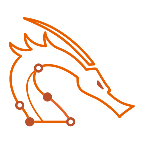

My certifications have taught me a huge amount of information, all of which is directly
relevant to my career and interests. The certifications I have taken or am taking are
Comptia Security+
Company: CompTia
Completed: 2022
General IT Certification with emphasis an maintaining a secure computer network
The Comptia Security+ certication taught me how to maintain
a secure business as an IT professional, it educated me on best practices
to prevent security vulnerabilities in a environment with many users.
OCSP
PEN-200

Company: Offensive Security
In Progress: Expected: January 2, 2024
Penetration Testing Certification
I am currently working on the OSCP certification and it has essentially taught me
everything I know about pentesting.